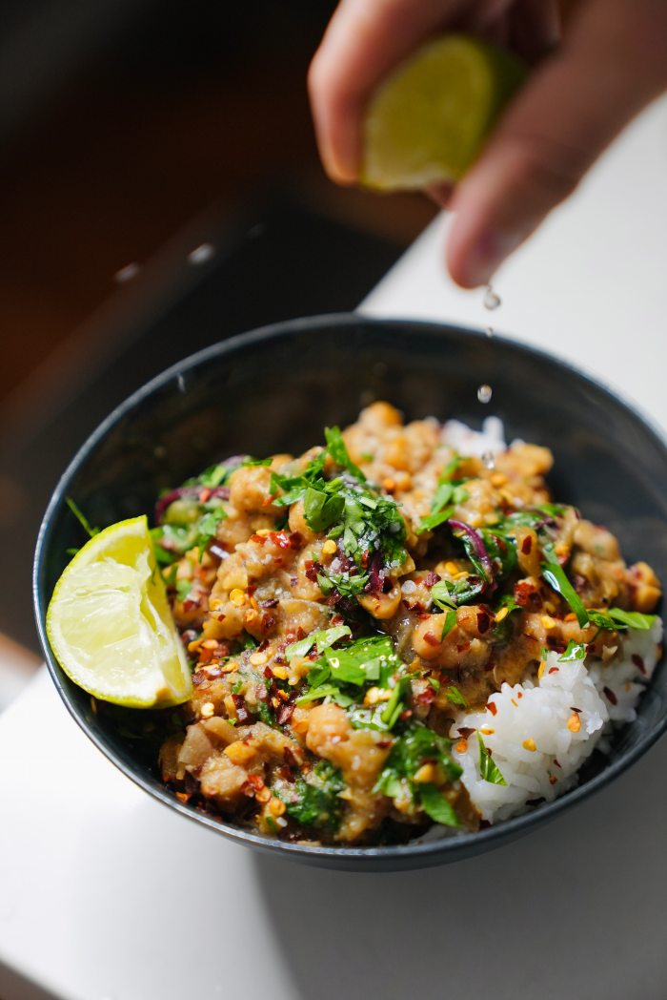

Cumin Stewed Chickpeas

Description
This is another recipe I often make at college when I run out of groceries for the week!
It only uses a handful of ingredients and comes together really quickly.
I serve it with some freshly warmed naan bread and extra chili flakes! Credits to https://scheckeats.com/cumin-stewed-chickpeas/ for the recipe!
Ingredients
- 1-2 shallots, finely sliced
- 4-6 garlic cloves, crushed and roughly chopped
- ~1 tablespoon ground cumin (use more or less to taste)
- Pinch dried red pepper flakes, to taste
- 1/4 cup extra-virgin olive oil (use more or less to taste)
- 1 can of chickpeas, rinsed*
- 1 bunch hearty greens, such as chard or kale, stems separated and sliced; leaves coarsely chopped
- Kosher salt and fresh cracked black pepper
- Paprika, (optional), to taste
Steps
- Prepare the aromatics and greens: thinly slice the shallots, and roughly chop the garlic, and cut the stems of the greens into bite-size pieces (I like to include the stems for extra fiber and flavor, but discard if you would prefer). Roughly tear or chop the leaves.
- In a medium heavy-bottomed pot, heat most of the olive oil on medium-low heat until it becomes fragrant and starts to shimmer. Add the garlic and shallots into the pot, and stir well.
- When the shallots and garlic start to soften, add in the chili flakes and ground cumin, as well as a pinch of paprika if using (this will "bloom" the spices and bring out deeper flavors: you will immediately be able to smell fragrance coming from the pot).
- Turn up the heat to medium/medium high and add the chopped stems to the pot, if using. Leave to cook for 5 minutes, stirring often, to ensure the aromatics do not burn.
- Drain and rinse the canned chickpeas, and add to the pot, along with a splash of water and a large pinch of salt. Using a wooden spoon or potato masher, crush up the chickpeas into smaller pieces, adding more water when the stew becomes too dry.
- Cook until the chickpeas are soft, saucy, and flavorful. Add handfuls of the greens to the pot, along with another splash of water if needed. Wilt until the leaves are bright green and decreased in volume.
- Taste and season with salt and pepper. Serve in a large bowl, and top with more olive oil, chili flakes, and paprika. A squeeze of lemon also goes a long way.